0. 課程資訊與教材
| 課程名稱 | 生成式 AI 應用電台・訂閱制第三季 第四堂 |
|---|---|
| 直播日期 | 2026/08/28（四），錄影全長 2 小時 34 分 46 秒 |
| 主講 | 益師傅（楊俊益，暱稱 ECF；智慧立方有限公司） |
| 客座講師 | 邱奕霖，圖解力教練、圖解力學院創辦人。講題「用一張圖找到你不可取代的價值」，時間約 01:22 至 59:36 |
| 本堂主題 | 前半：把經驗系統化成帶得走的專業（九宮格、清單、圖解筆記、AI 日記）。後半：四支自製單檔工具的實作與改版 |
| 課程教材 | Drive 資料夾「第四堂」：課堂錄影 ×1，加上四個單檔 HTML 工具 |
| 流通限制 | 老師明確要求不得外流，並要學員在鏡頭前宣誓（開場 00:01–01:02、以及 72:00–72:23 各一次） |
🧰 四個工具檔
| 工具 | 檔案 | 一句話 |
|---|---|---|
| 📚 PDF 自動切割工具 v9 | PDF拆分工具-v9.3.html（357 KB） | 把整本 PDF 依章節自動拆開，附單頁摘要、大綱與心智圖、OCR、去歪斜等一整排工具 |
| 📊 消費族群分析儀 v17 | 消費族群分析儀_Groq版_v17.html（395 KB） | 丟產品圖或資料進去，產出 17 個分析頁籤，可匯出 PPT／PDF／Word／Excel |
| 🌌 星脈圖譜 v38 | nexus_atlas-new.html（583 KB） | 把任何主題畫成關聯星圖，八種圖譜類型，資料可來自文字、檔案、網址、論文或台股 |
| 🍳 AI 料理王 | AI料理王_Groq_Gemini3_5.html（79 KB） | 選食材與風格產生菜單，再用 Gemini 生一張擬真菜色照，可下載 PDF 食譜 |
1. 一張圖看懂這堂
| 時間 | 段落 | 在講什麼 |
|---|---|---|
| 00:01–01:20 | 開場與宣誓 | 因為有邀約講師，要求不得外流，學員在留言區宣誓 |
| 01:22–16:30 | 邱奕霖：焦慮與解法 | AI 時代學習焦慮的三個卡點，以及輸出 100 次、收集問題、建立社群三個解法 |
| 16:30–35:50 | 專業怎麼累積 | 黃金公式；用九宮格把「只在腦袋裡的經驗」變成帶得走的專業；以出書為終點回推 |
| 35:50–48:55 | 興趣與圖解 | 用興趣製造記憶點；萬用圖解筆記三元素；手繪轉數位、圖轉文 |
| 48:55–59:36 | 你自己 | 視覺標籤、固定配色，以及累積到 40 萬字的 AI 日記系統 |
| 59:47–69:39 | 益師傅：持續與輸出 | 回應邱老師，講自己的創作動力來源與數字 |
| 69:39–85:20 | PDF 自動切割工具 | 修好因模型停用而壞掉的 AI 摘要，示範章節拆解（含一個失敗案例） |
| 85:37–121:20 | 消費族群分析儀 | 新增 BMC 商業模式圖；現場跑出 Groq 額度錯誤，當場貼給 Claude 改 |
| 121:20–139:10 | 星脈圖譜 v38 | 論文引用驗證、台股族群關聯、多種佈局圖，改了四五十次才到這版 |
| 139:18–147:20 | 本地端工具 | 自製 Ollama 介面：專案、MCP、提示詞版型、四模型同時比對 |
| 147:20–154:40 | 收尾 | 下次邀 AI Agent 講師；中秋節想教做鳳梨酥 |
邱奕霖說：差異在你的案例與經驗，因為 AI 找得到知識理論、態度原則、方法論，唯獨找不到你的故事。
益師傅說：差異在你有沒有真的交付出來。「很多的想法，你我都有想法。少了做法，少了成果，那就是空談了。」
2. 客座講師與講題［01:22 起］
- 邱奕霖，圖解力教練，創辦台灣最大的圖解教育平台
- 圖解教育的定義：用畫圖來解決問題。工具包含心智圖、九宮格、火柴人
- 工作內容：到學校教老師與學生用畫圖做筆記、做教學；到企業帶同仁用畫圖做邏輯思考；教主管用圖像跟同仁建立共識
- 今年出版第三本書，把 2020 年一人公司創業到現在快六年的歷程整理成一套系統
3. 學習焦慮的三個卡點與三個解法［03:10–13:50］
他先在聊天區做了一個投票：AI 時代你的學習焦慮是變多還是變少？當天 Y 明顯比較多。
三個卡點
- 拼命輸入，沒有輸出。或者把輸出直接外包給 AI，「你幫我來做心得，你來幫我做我的專欄的內容。但過程中是完全沒有思考的」
- 知道很多，但沒有實作。「願意花時間去把這些知識實作、應用在真實場景中，真的來解決自己的問題或是解決別人的問題，這個其實比例非常非常低」
- 沒有立即反饋。玩遊戲有經驗值有等級，「但是在學習的路上它是無形的，是看不見的」，所以容易覺得停滯不前
解法一：挑戰輸出 100 次
他 2016 年才知道有「視覺紀錄師」這個職業（歐美常見，在演講或會議現場邊聽邊用圖文把內容畫出來），知道之後很開心但更焦慮，拼命看書。
直到 2019 年他決定：挑戰一年看 100 本書、畫 100 張圖解筆記。大約兩三天一本，年底畫了 100 多張。
- 「我發現我不太焦慮了，因為我就給自己一個任務⋯⋯我其實根本沒有時間在焦慮」，注意力從焦慮轉成「怎麼找下一本書、快速完成」
- 能力因為應用了 100 次而快速成長
- 對外的效果：「當你完成這件事情之後，對一般人來說，他會覺得有一個專業的門檻」
- 形式不限：短影音、文章、圖卡、筆記都可以，重點是鎖定一個主題輸出 100 次
解法二：收集問題，然後回答
2020 年他建了一個 Google 表單，收集大家對圖解應用的問題。
- 「當我收集了大家的問題，我不可能全都會。為了要回答大家問題的時候，我就要主動去找答案。這時候我也沒有時間焦慮」
- 成果：收集了 200 多個問題，回答其中 60 個，用電子報寫成 60 篇文章，累積約 8 萬字
- 後來出版社私訊問他有沒有出書打算，他敢答應，是因為「我已經累積了 8 萬字了」
解法三：建立社群
- 2019 年畫 100 張筆記的同時就創了社群，持續在裡面分享
- 好處一：留言、按讚、互動變成回饋來源，解決「獨自學很孤單」的問題
- 好處二：有了社群才能發表單收問題，形成循環
- 好處三：你永遠不知道誰在裡面潛水。「我永遠也不知道有這麼多出版社的總編輯加入到這社群裡面，然後平常都潛水，都不會留言，也不會互動。但某一天它就會私訊你說有一些合作的機會。」企業人資主管、學校老師主任也在裡面
- 關鍵是「持續的分享、持續的回答大家的問題」，建立足夠的信任資本之後，「後續的合作是自然而然發生的」
4. 立即反饋：把 AI 當教練［13:50–16:00］
這是他自己的案例，用來解決第三個卡點。
- 2018 年跑過半馬 21 公里，之後就沒再跑。2025 年決定挑戰全馬 42 公里，比賽在 11 月，他 8 月 1 號重新開始
- 這次跟以前不一樣的地方：他在 Gemini 開了一個專案，叫「健身挑戰每日運動」
- 每天跑完就語音輸入心得，貼上 App 的里程數與配速，AI 以教練的身份回饋這次跑得如何、給建議
回饋的種類他分得很清楚：情緒價值的、實質建設的、專業建議的、策略調整的。
結果：「從去年 8 月到現在，不敢說每天都跑，但這個跑步習慣就很神奇的沒有中斷過。」
5. 黃金公式［16:29 起］
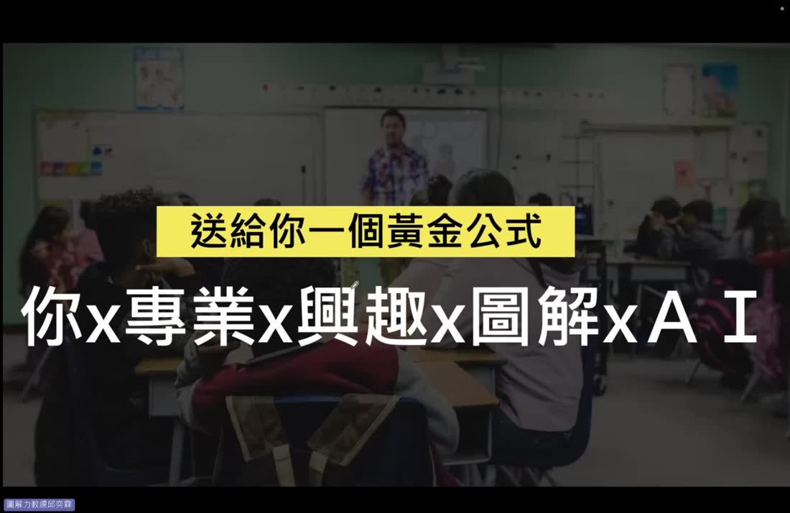
接下來的整場演講，就是逐一拆解前面四個怎麼操作。
6. 專業：用九宮格把經驗變成帶得走的能力［17:04–25:30］
先聽他的痛點故事
創業前他做政府標案與寒暑假營隊，辦過幾十個營隊，自認有一定的專業累積，但從來沒整理過，「就一直靠我的大腦的直覺或是靠我的記憶去做任何的判斷跟決定」。三件事讓他發現有問題：
- 主管要他教新人怎麼辦營隊，他約了個下午喝咖啡講一兩個小時。一週後又來一個新人，他再講一次，「我就發現一件很吊詭的事情，就是這禮拜我講的內容好像跟上禮拜不太一樣」，因為全靠大腦回想，不穩定
- 新人聽完「其實根本一頭霧水」，反覆回來問，那個下午等於白花
- 最震撼的一次：離職後到新單位，主管問他辦營隊有哪些面向要注意，他答不出來。「我可以跟他說很多我辦營隊很精彩的故事⋯⋯但是我發現我沒辦法有系統化的跟他說辦營隊到底有哪些面向。」
解法：一張九宮格
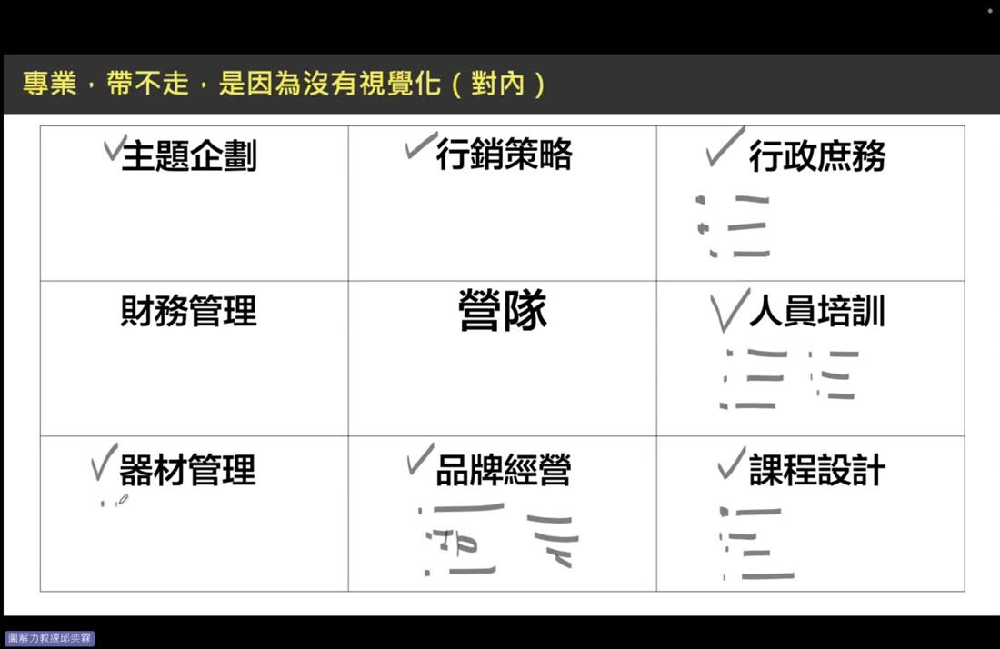
每一格底下都還有細節，例如主題企劃包含營隊名稱與主題怎麼定；行銷包含通路與廣告怎麼下；行政庶務包含場地、餐飲住宿、配合單位；人員培訓包含來源、培訓方式、制服規範；課程設計包含配合講師與亮點課程；品牌經營包含 IP、主視覺、配色。
三個好處
- 可以有系統地講給別人聽：辦好一個營隊有這八個面向
- 可以累積與迭代：「我這次在行銷活動好像做得不錯，我就可以把它加進來⋯⋯我辦 10 個營隊，這個九宮格它會越來越完整。」沒有九宮格的話，辦 100 個營隊腦袋裡也只會留下幾個比較有印象的故事，「到底做對了什麼或是哪些是做錯的，你完全不記得」
- 可以教別人、開課、出書
一、格子太小不是問題，「主題企劃可能又可以再拆成八格」，這是一個地圖的概念，細節他會搭配 Google 文件串連。
二、跟主管談案子時不用做簡報，「我用一個九宮格就可以快速讓他知道我們營隊的詳細內容，然後他會覺得你超專業」。
7. 對外分享：一個故事與三份清單［25:28–35:50］
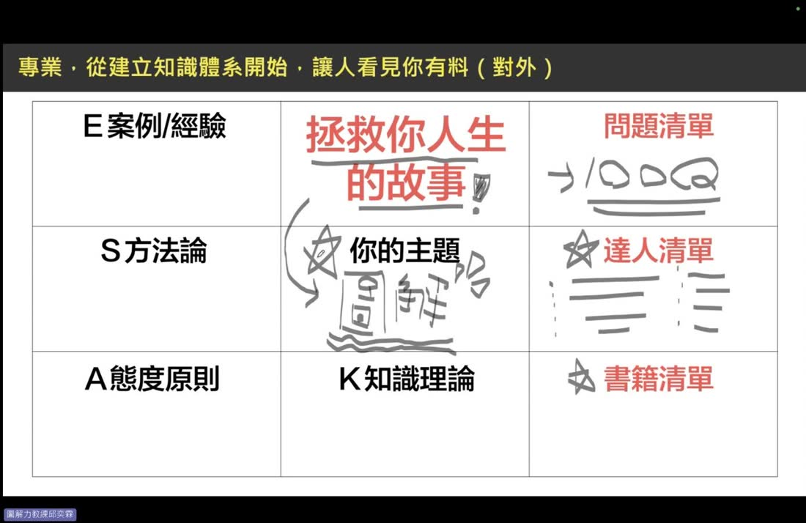
核心：拯救你人生的故事
他自己的故事：以前在職場上抽象思考時腦袋空白、不善於溝通，很難跟主管或客戶建立共識，「又容易內耗，心裡面在想主管在想什麼、客戶在想什麼，然後就很累」。接觸圖解後，他在一張紙上把提案大綱畫出來給主管確認，「我就不用猜他到底在想什麼」；也用一張圖讓客戶知道提案重點，不一樣就直接改，改完再變成 PPT 或 Word，通過率就高了，「因為大家彼此腦袋中有相同畫面」。
為什麼要一直講：「我 AI 上網打任何資訊，要找圖解所有訊息都可以，什麼知識、理論、方法全都可以找到，一下子幾秒鐘就出來了，但為什麼要聽邱奕霖分享？因為圖解拯救過邱奕霖的人生故事。」
三份清單
| 清單 | 怎麼做、為什麼有效 |
|---|---|
| 問題清單 | 收集這個主題的 100 個問題並回答。「你能夠回答這 100 個問題，其實你就大幅的進步跟成長了。」他建議從這份開始 |
| 達人清單 | 整理這個領域的達人，不一定要 100 個。他整理了圖解領域的 30 位。效果：「別人在看到你分享的時候，他也會覺得你就是這達人的其中之一。」越冷門越專業的領域效果越好 |
| 書籍清單 | 把知識分成四類：知識理論、態度原則、方法、案例 |
所以他的建議是：把時間花在累積案例與經驗，不管是自己的，還是你幫助別人解決問題的故事。「這個我覺得是在現在 AI 時代下最大的亮點。」
以出書為終點回推
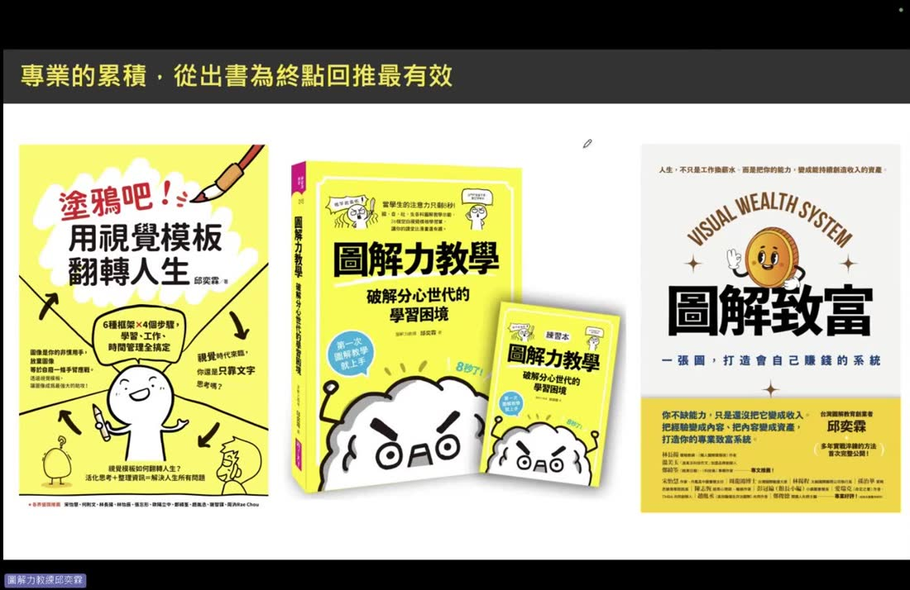
做法很具體：在 Google 文件裡先開好書的目錄架構，「雖然還沒有出版社找我出書，但我就先跟 AI 協作，我先把我的目錄先寫一下」。之後每寫一篇文章就歸到對應的單元。
反過來說：沒有這個架構的話，要回頭把散落的文章找出來、排列、篩選，「這時間太漫長，難度也太高了。而且難度太高就不會做」，結果就是「我們分享一大堆的文章，他可能就像放煙火一樣就不見了」。
8. 興趣：讓專業有記憶點［36:30–39:34］
他有一套自己的圖解筆記方法論叫 DRAW，但他很誠實：「真的，我在 AI 我可以問他說『你幫我整理一個圖解筆記的方法論』，他幾秒鐘就跑出來了。每個人其實都可以有自己的方法。」
差異來自把專業乘上你的興趣：
- 興趣是旅行，就用旅行談圖解筆記；興趣是料理，就用料理談圖解筆記
- 他自己的案例：喜歡打球，就把過往網路上跟籃球有關的文章挑出來，請 NotebookLM 精選，整理成跟創業有關的反思，做成一份簡報
- 「有一個人用籃球去談創業⋯⋯會比單純跟人家談創業的心法、思維來得更有記憶點」
而且還有一個附帶好處：「我自己分享的過程中也比較開心，因為這本來就是我的興趣。」
9. 圖解：萬用筆記框架與圖轉文［39:34–48:55］
先講一個陷阱：不要照單全收 AI 生的圖
他的結論是：門檻消失了沒錯，但「要能夠主動的應用這些圖，我覺得會是關鍵」，而不是下個指令請 AI 把文章變成圖然後照單全收。
圖解分兩種，是比重不是對錯
| 類型 | 工具 | 用在哪 |
|---|---|---|
| 理性 | 交集圖、矩陣圖、流程圖 | 大家比較熟悉的那一類 |
| 感性 | 漫畫情境、火柴人 | 要呈現案例的時候，建議適時搭配一點 |
跳棋人：一個字就能畫出所有角色
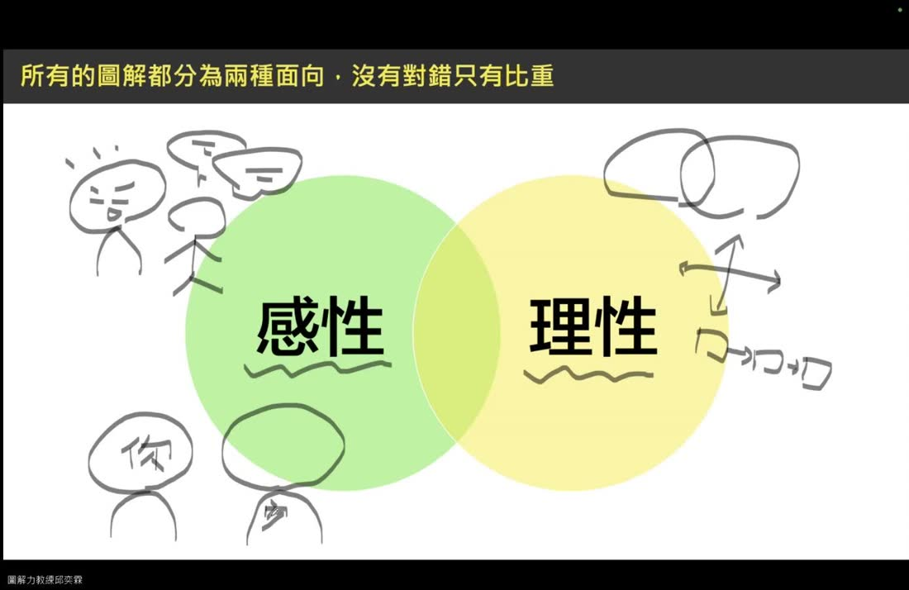
第二個理由更實際：學會之後，你可以在一張紙、白板或黑板上邊說邊畫做即時溝通。
萬用圖解筆記：三個元素
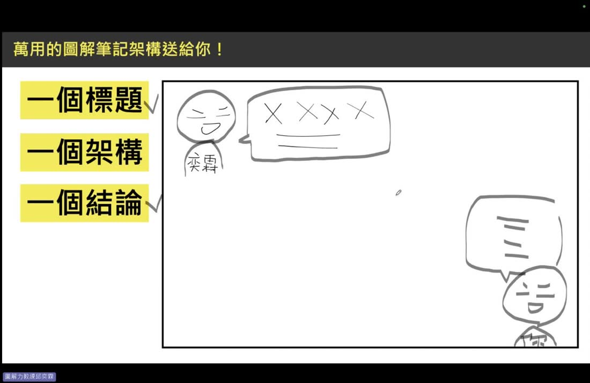
- 一個標題：左上角畫一個跳棋人加對話框，寫講者名字與講座主題
- 一個架構：中間三個圓圈，寫下三個印象深刻的收穫關鍵字，細節用括號補充在旁邊
- 一個結論：右下角畫你自己，寫上名字、表情，用對話框寫今天的心得收穫
「所以我常常說分享學習心得是一個日行多善的事情」，對講者、對出版社、對你的社群成員都有好處。
他自己也用這個架構讀書：「我大概 30 分鐘內就可以快速看完一本書的重點，然後表達出來。不需要從頭看到尾⋯⋯站在知識分享的立場，就是把我自己覺得最有共鳴的分享出來就好。」
手繪轉數位，然後圖轉文
他以前的困擾：手繪筆記應用範圍狹隘，掃描放進 PPT 會有陰影，要變成文章還得重新打字。「那這轉換其實是蠻麻煩的。轉換一旦麻煩，你其實就不會做，不會做呢，你就會累積一大堆筆記，但那些筆記沒有其他用途。」
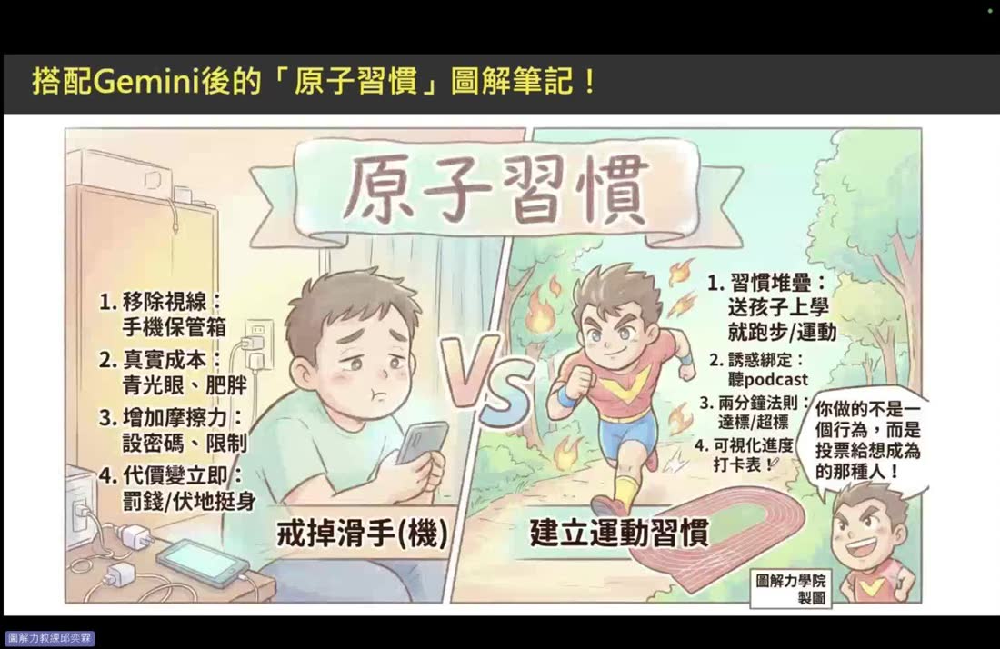
現在的流程是兩段：
- 圖轉圖：畫得不工整沒關係，拍照丟給 ChatGPT，變成想要的風格
- 圖轉文：畫完之後打開 ChatGPT，用語音輸入講心得。「畢竟這是我畫的，我總是能說出一些心得」，語音轉成文字，這張筆記就變成文字，再變成專欄文章
10. 你自己：視覺標籤、配色與日記系統［48:55–59:27］
視覺標籤與配色
- 讓自己的 IP 角色出現在所有筆記裡。「IP 角色他的商業價值其實是沒有限制的、沒有天花板的，但關鍵是要累積，不然人家根本不認識這是誰」
- 透過這個角色說你自己的故事，以及為什麼要推廣這件事的使命
- 固定配色：他自己所有產出都用黃黑配色。「當所有的產出都是黃黑配色的時候，大家看久了，看到這個黃黑配色就會知道是我們圖解力學院的產出」
- 建議：選兩種顏色當主色，加一個 IP 圖，然後要持續。「不要一下變來變去的，那其實沒辦法累積」
日記：他說這是 AI 時代的創作分水嶺
他從國中就開始手寫日記，但發現三個問題：寫得慢、想很多但寫兩件就懶了、沒辦法數位化。「那當它沒數位化的時候，其實你寫了 10 年 20 年⋯⋯它沒辦法再利用。」
「如果只有寫事實就很容易變流水帳。但是如果你有寫到一些感受，我覺得會更加個人化。那你自己有沒有什麼樣困擾、發現、觀點？這個我覺得很重要。以及你有做什麼樣的行動。」
2025 年 3 月 1 號開始改用 AI 寫日記：開一個專案，語音輸入，並給 AI 一些規則，讓它重新編排、給清楚的日期與標題，把凌亂的內容寫成比較好讀的形式。他特別說明「以我的為主，他不會自己亂掰」。
累積到這堂課當天，大約 40 萬字。
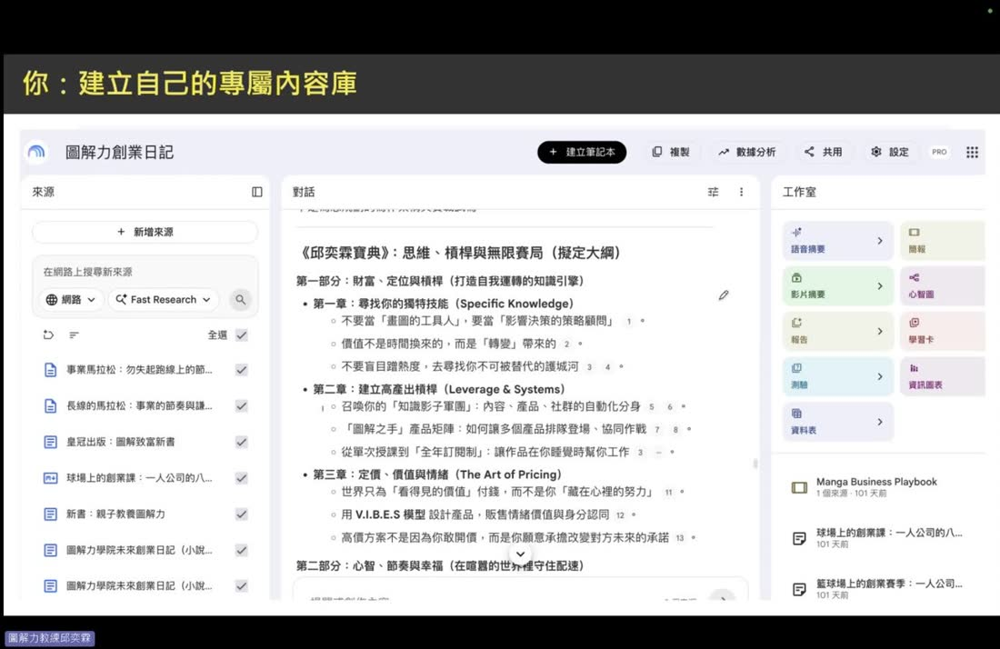
「我只要問他任何問題，我就有滿滿的案例了。比如說我要問親子教養的，他就可以把我從去年 3 月 1 號到現在跟孩子溝通的一些問題、案例⋯⋯我早就忘記可能發生什麼事了，我要他找幾件就找幾件出來。那我要寫文章的時候，是有滿滿的我個人的案例跟故事。」
再進一步：「如果我們今天要寫自己的寶典怎麼辦？你要回想一下你曾經講過哪些話，哇這難度很高。我直接丟給 NotebookLM 去搜尋我寫過的所有日記，他可以快速幫我分類我曾經講過哪些話，每一句話後面都有案例跟故事。」
成本：「你只要每天花個五分鐘，就把它語音輸入一下。」
「大部分的專業領域的內容都是文字，特別是越專業的主題，基本上都是文字，沒有圖解。所以當你能夠用圖解把你這個領域的知識、專業呈現出來，你就是這個領域的第一人。」他說他的目標是幫助 100 個產業或領域的夥伴做到這件事。
11. 持續與輸出［59:47–69:39］
益師傅接回主持後，先講他聽完的感想：「你會發現其實這些神人或是大神們都有一個特色，就是持續的力量。」他也提到自己創社團時同樣寫了 100 篇技術文章，「你會發現好像每個人都以這個當一個目標」。
但他跟邱老師有一點不同意見
「但是益師傅不覺得這樣。我的觀點不一樣，我覺得認真過了就一定要有一個結果。假如沒有這個結果，這麼認真，目的是為什麼？慢慢慢慢你會失去那個動能。」
他接著把這件事跟邱老師的說法接起來：邱老師的 100 本書就是一個目標，「所以他要有一個產出」。
他自己的創作動力來源
他問學員猜猜看為什麼他有創作的動力，然後自己揭曉：
「很多的想法，你我都有想法。少了做法，少了成果，那就是空談了嘛，沒有意義。常常都聽到有些人講『我早就想到這樣，我早就想這樣做』。與其這樣，還不如把它給做出來。」
他的數字與作息
- 累積的提示詞大約 600 多個，程式大約 380 幾支
- 「這不算什麼，比起有些人高產出的。但是重點是我一直持續，我沒有中斷。」
- 作息：「我大部分每天夜深人靜的時候，等家人睡覺可能 10 點多，一直研究要一兩點。每天都是這樣的過程，包含出去玩也是這樣子。」
- 他對自己的評價：「因為我的學習能力比較慢，所以我就必須要不斷不斷的一直試。」
12. PDF 自動切割工具 v9［69:39–85:20］
本頁如實記錄這段課程內容，但不寫操作步驟。那類網站散布的電子書多半未取得授權，用自己買的書、公司自有文件或公開授權來源來測試這支工具，效果一樣，也不必承擔風險。
為什麼要拆章節
老師先問學員：「你們在學習的過程裡頭，是一個章節一個章節學習比較好，還是整本書學習比較好？」答案是一個章節一個章節。工具的定位就是：把電子書或期刊雜誌拆成章節，再一章一章丟進 NotebookLM 研讀，或做成語音 Podcast。
這一版修好了什麼
老師的處理原則值得記下來：「假若有模型被停用的狀況下，你一定得告訴益師傅，我可以改一下這個版本。」
這跟上一堂釣魚選股 V10、V11 失效是同一個問題：串第三方 AI 平台的工具，模型退役就會壞，工具必須跟著改版。
操作
- 確認版本是 V9
- 打開 AI 功能，勾選 Groq API，貼上你的 API Key
- 按測試連線。失敗代表 Key 有問題，或那個模型又被停用了
- 上傳 PDF（最大 50 MB），它會自動依章節拆解
- 按預覽逐章確認拆得準不準
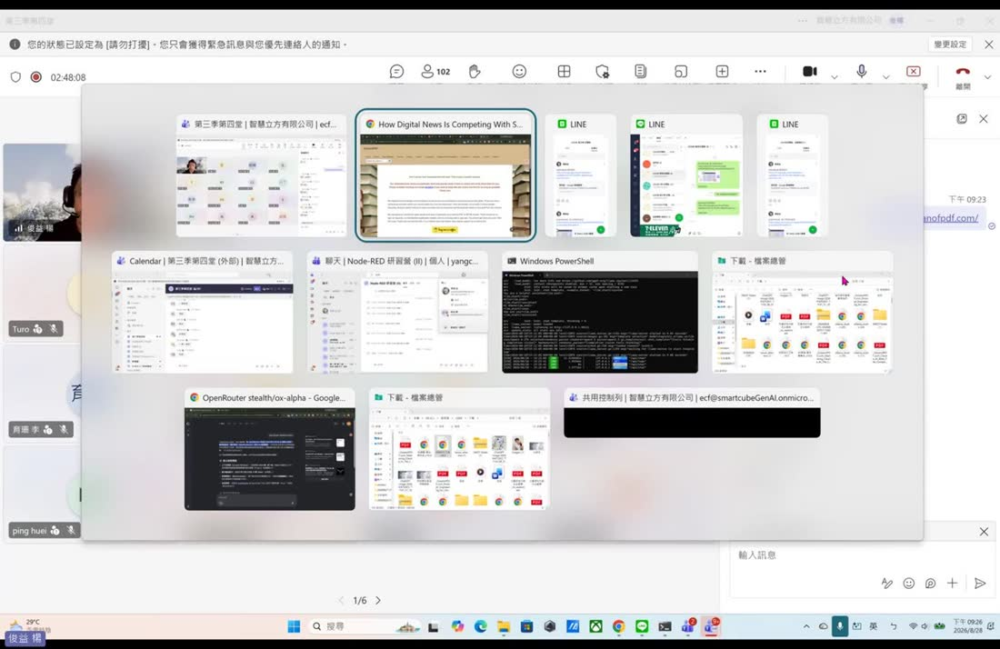
他當場示範了一個失敗案例
換第二本就順利拆成六個章節，他按預覽驗證第五、第六章，位置都對。
這是很好的教學示範：先讓你看到工具的邊界，再示範它能做什麼。
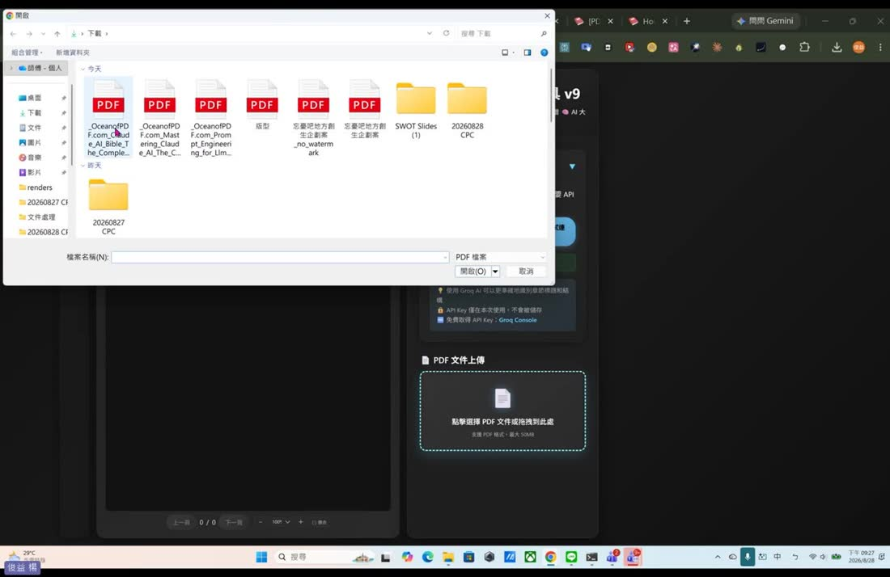
還有一整排功能
| 功能 | 說明 |
|---|---|
| 目錄頁次指定 | 告訴它目錄在第幾頁，它會依那頁的關聯來切割 |
| 單頁摘要 | 看到某一頁想知道在講什麼，按摘要 |
| 大綱與心智圖 | 產生三層結構大綱，還能畫成 Mermaid 心智圖 |
| 逐頁拆成 JPG | 一頁一圖打包下載，適合處理 NotebookLM 產出的簡報 PDF |
| OCR | 掃描書可以逐頁把文字抓出來再摘要 |
| 影像處理 | 亮度對比、背景去雜訊、歪斜扭正（翻拍進來字是歪的，扭正後 OCR 效果比較好） |
| 頁面管理 | 指定頁數重新匯出、合併、旋轉、加密解密、壓縮、自動建立書籤 |
| 其他 | 批次作業、兩份 PDF 前後比對、簽名與圖像疊加、畫線標記 |
13. 消費族群分析儀［85:37–121:20］
老師自己給的評價很直接：「臭屁的講，我覺得它叫做強大。」給它一個連結、或你們公司的產品資料，它就能做出一整份消費族群分析。
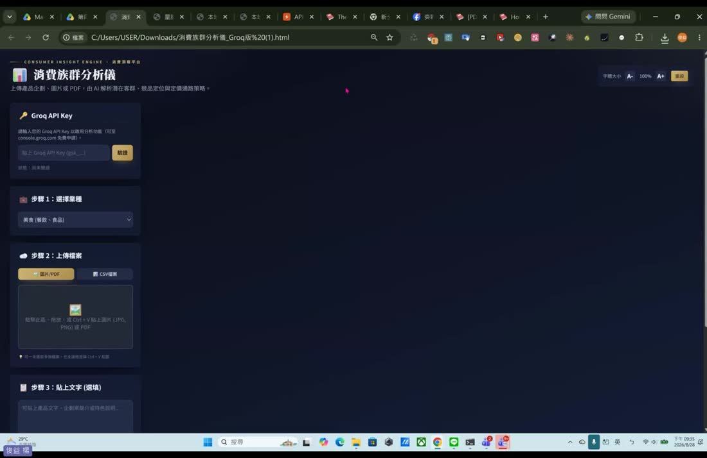
這一版新增了什麼
- BMC 商業模式圖。「我把 BMC 的部分加在消費族群裡頭分析，那更加的貼切。」（BMC 是兩週前那堂課的主題）
- 進來就有一張流程圖，六個步驟告訴你怎麼做。老師說這是他往後寫程式的新習慣：「我以後寫程式一開始進來的時候，我會想說設計一個類似像一個 rundown 的過程，那你就清楚說原來我要做什麼步驟，一步一步下來。」有點像 help 的概念
- 換掉停用的模型。「之前的版本其實 Llama 70B 基本上現在是不能用的。」
資料可以怎麼餵
| 來源 | 說明 |
|---|---|
| 外部連結 | 老師說這個最好：「它會透過外部連結直接去讀取裡頭的資料」 |
| 截圖 | 支援 Ctrl+V 直接貼上，但要給它完整的圖 |
| PDF／CSV／圖像 | 都可以 |
| 補充文字 | 「假如你怕它辨識會有錯誤，麻煩你給它這個品牌的資料」 |
他當天示範用的是一台華碩 ROG 電競筆電的產品頁截圖，加上型號文字。
產出
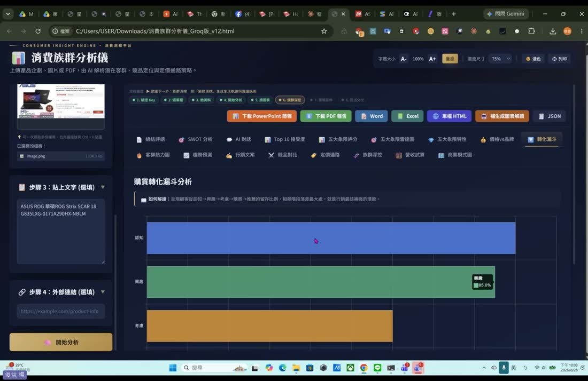
- 分析頁籤：總結評語、SWOT、AI 對話、Top 10 接受度、五大象限評分與雷達、價格 vs 品牌、轉化漏斗、客群熱力圖、趨勢預測、行銷文案、競品對比、定價通路、族群深挖、營收試算、商業模式圖
- 競品比較：可以把競品網址全部貼上，「它會自動去抓相關的競爭對象的資料」，例如找微星或技嘉來比
- 匯出格式：PowerPoint、PDF、Word、Excel、單檔 HTML、JSON
- PowerPoint 是逐頁生成的，「你知道它為什麼跳動跳動嗎？它在生成每一頁的資料⋯⋯現在目前它自己在截圖」
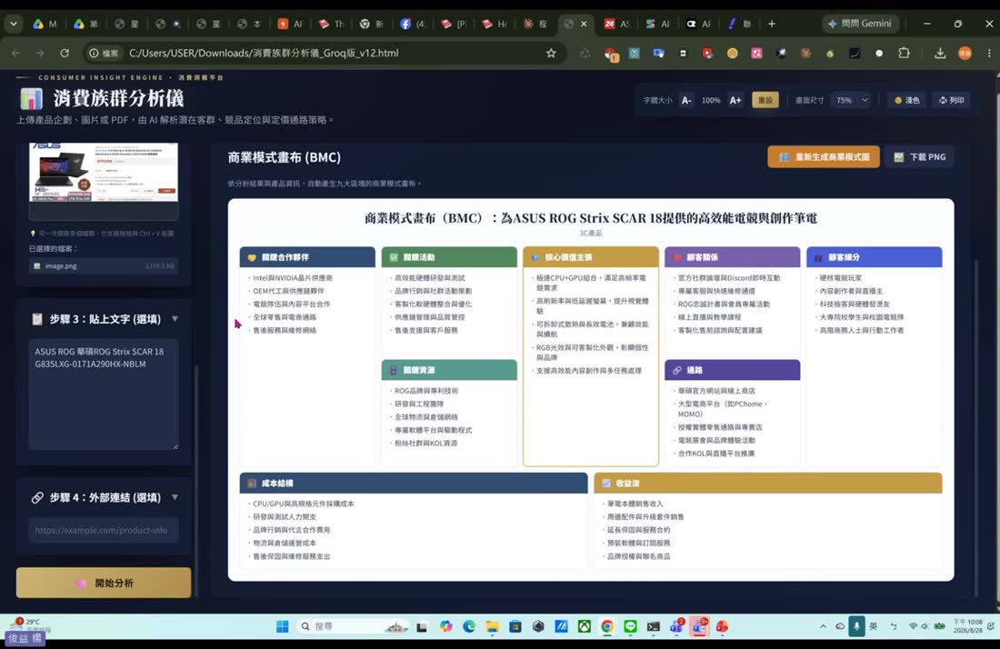
他自己也順口列了想改的地方：深色配色印出來不理想，想改淺色；某些灰字看不清楚，應該用黑色。
14. 星脈圖譜 v38［121:20–139:10］
把任何主題畫成關聯星圖。老師特別感謝一位清華的老師持續給他論文功能的建議。
五種資料來源，用途不能混
課堂上有學員反映結果很奇怪，老師一看就發現是用錯模式了，這段解釋很值得記：
| 模式 | 適合什麼 |
|---|---|
| 主題生成 | 研究一個主題，例如半導體、LLM 演進、MQTT、物聯網。它會去把相關關聯資料挖出來。可以指定年份區間，例如只看 2025 到 2026 年的技術演進 |
| 貼上文字 | 給一段文字，找出其中的關聯 |
| 上傳檔案 | 例如公司產品資料，找出產品之間的關聯性 |
| 網址 | 丟一個產品頁或產品列表頁 |
| 論文 | 用 DOI 或論文主題，可驗證是否真的有這筆引用 |
| 台股關聯 | 選族群或個股，做產業關聯分析 |
他也說明為什麼要分開而不是用一個關鍵字框搞定：「因為太廣義了，沒有辦法，因為怕會失焦，所以我才會一個一個把它分開。」
這是很好的產品設計說明：限制輸入的形狀，是為了讓輸出可靠。
八種圖譜類型
論文引用、技術演進脈絡、因果與影響鏈、產業生態與角色、學術理論與流派、歷史事件時序、問題→解方→風險、關鍵人物與組織，另外還可以讓 AI 自己判斷。
多種佈局
- 時間軸圖：分前期、中期、近期。老師說「這個蠻重要的⋯⋯你的一個論文的研究，它也有分這樣」
- 階層圖：上下游或關聯層級
- 心智圖：後來改版加的，可彩色、可收合。老師忍不住說：「這個還比 NotebookLM 漂亮吧？這個花好久時間改的。」
- 時間軸蛇形圖、表格、力導向圖、環形圖；可針對全部或只針對標記的節點產生 AI 論點
- 可以把關聯圖變成一段播放動畫，一個節點一個節點畫出來並附說明
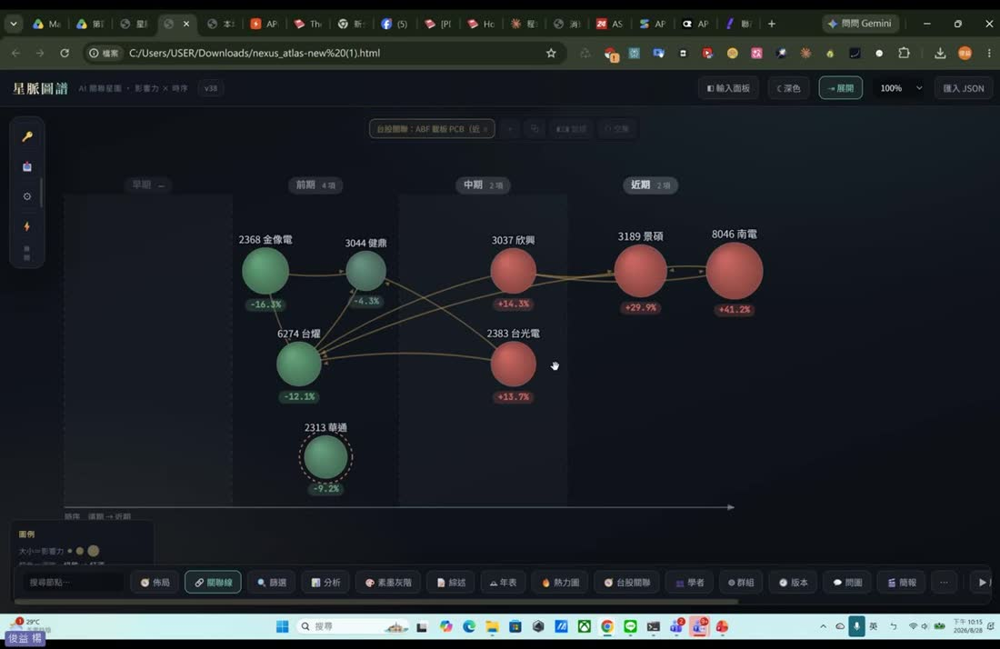
台股關聯與 K 線
選一個族群（例如 PCB 載板列出八檔）產生關聯圖，可以看到彼此有沒有關聯，也能點進個股看 K 線。老師示範時講到載板三雄，並強調這個功能的定位：
「有時候我們研究一檔股票，不是只是它為了漲而怎樣，你順便可以用產業的研究。」
他也在這裡帶到一句布林通道的口訣：「中線不破，不必操作。」
（工具本身也有標註「指標僅供參考，不構成投資建議」。）
那個「隱藏模型」
吸引他的點是 context window 非常大：「我可以丟整個 PDF 檔下去做，效果會比較好，我不用透過所謂的瘦身計畫再把東西丟上去，而是直接餵給它，它比較不會出錯。」
要用的話得去 OpenRouter 註冊拿 API Key，「他也不跟你廢話那麼多，就直接取得 API 的 key」，流量限制比較寬鬆。
他給的實際建議是：「假如有疑慮的人還是可以用 Groq。」
這件事沒有標準答案，但老師沒有硬掰，而是給了一個可以自己選的退路，這個處理方式本身就值得學。
V38 的意思
對照上一堂釣魚選股從 V1 一路到 V12，這是同一件事的第二個證據：這些看起來很完整的工具，都是幾十次迭代堆出來的。
15. 本地端工具與進行中的專案［139:18–147:20］
這是他當天最新、還沒定名的東西：一個跑在自己電腦上的 AI 對話介面，接本機 Ollama。
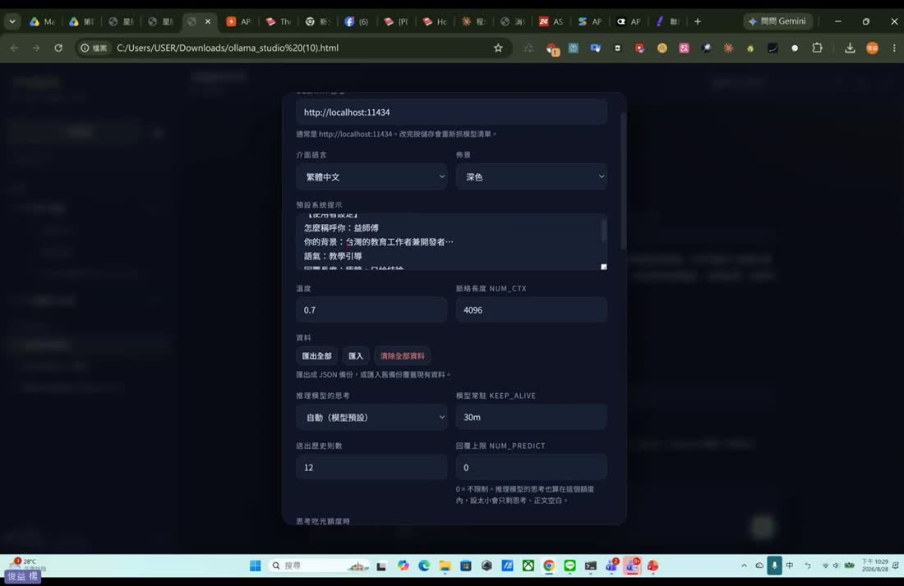
| 功能 | 說明 |
|---|---|
| 專案 | 可以新增專案、切換專案，「就是 ChatGPT 的專案概念是一樣」 |
| 模型設定 | 指定 Ollama 路徑、選介面、調溫度、預設系統提示詞（角色扮演）、思考模型自動切換 |
| MCP 串接 | 已經串了幾個，也可以額外新增伺服器 |
| 網路搜尋 | 可從維基百科查，或直接提問 |
| 提示詞版型 | 摘要、翻譯、音譯、出考題、挑錯、簡化、表格。按「／」就能叫出來 |
| 外部連結優化 | 特別針對抓外部連結做了處理 |
| 語音與附檔 | 麥克風輸入、附加檔案、朗讀 |
另外他也解釋為什麼要做成執行檔而不是純網頁：「這樣我就可以避開 CORS 的問題⋯⋯而且我之後假如改成所謂的 AI Agent 的版本，可能會更適合。」
四個模型同場比對
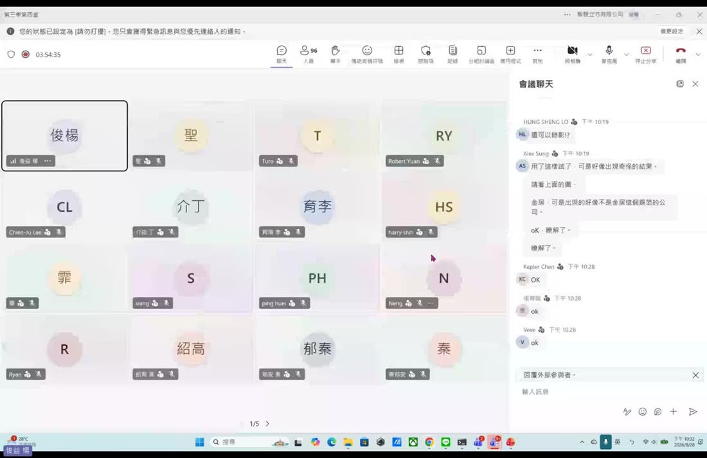
他昨天讓三個模型同時寫俄羅斯方塊，「這三個寫出來的效果真的有點差別」。他的規劃是再往前一步：
這是很成熟的想法：把「哪個模型比較好」從感覺變成可累積的資料。
目前的問題是效能不如預期，他還在找是哪一端的瓶頸。
順帶提到的其他專案
- 政府監控影像串接：去年做過，現在改成 10 秒更新一次，想把影像辨識加上去。目前針對台北與新北，未來想全部加上，「你以後在上面可以查詢你的車況」
- 多專案並行：「因為現在這種 Vibe Coding 很方便，其實我們可以同時進行好多個專案同時在開發。比如說我有些在 Claude 寫，有些在 Codex 裡頭做，有些在別的平台來試，而且我又可以同時間來做烘焙的部分，還是做備課的部分。」
- 學員因此起鬨要他開時間管理的課
16. AI 開發現場：三次出錯［貫穿後半堂］
這堂課後半段最值得看的，其實不是四支工具有多完整，而是它們出錯的時候老師怎麼處理。三次都被錄下來了。
第一次：拆不了的那本 PDF［79:03］
他沒有換一本裝作沒事，而是停下來解釋為什麼這本不行（字太小太淡、沒有目次頁碼），並直說「你只能手動切」。讓學員看見工具的邊界，比只看見成功案例有用。
第二次：他自己找不到最新版［87:44–91:32］
對做工具的人來說這很真實：當你同時開好幾個專案、每支又改了幾十版，版本管理本身就是一個問題。
第三次：Groq 額度不夠，當場貼給 Claude 修［94:12–95:18］
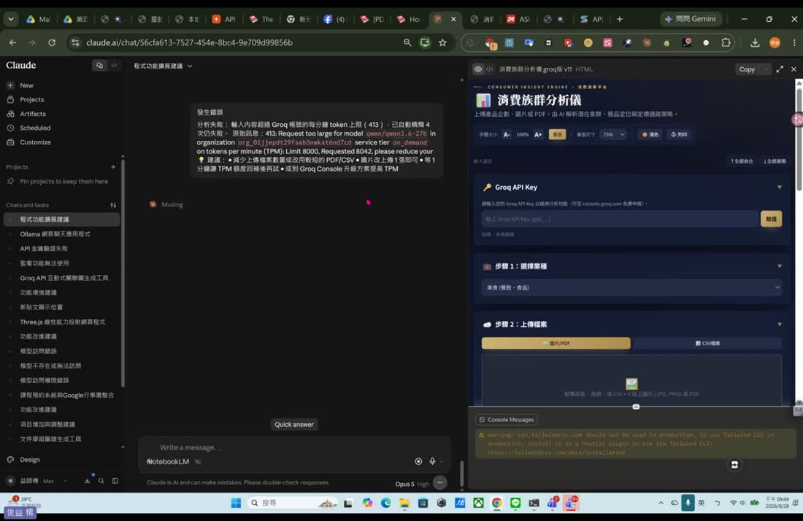
分析跑到一半跳出錯誤。工具自己吐出的訊息寫得很完整，值得學：
然後它給了四個可行建議：減少上傳檔案數量或改用較短的 PDF／CSV、圖片改上傳一張、等一分鐘讓額度回補後再試、或到 Groq Console 升級方案。
一個好的錯誤訊息應該長這樣：說明發生什麼事、它已經自己試過什麼、以及使用者現在可以做什麼。
老師的反應是直接把過程攤開來給大家看：
他也不掩飾尷尬：「不好意思，漏氣。其實原本他是可以用，那天你有看到我在 FB 分享他是 OK 的。然後我也不曉得今天怎麼了。」
後來改完他補了一句跟上一堂一致的判斷：「改了之後 Claude 比較敢改。真的啦，我不敢用 Gemini 或其他的，我發現 Claude 比較聽話。」
老師自己的總結也很坦白：「我不敢說我程式寫得很好，但是我只是說我真的很用心吧。」
17. 兩位老師的金句
18. 資料來源與整理說明
- 原始教材：Google Drive 資料夾「第四堂」，課堂錄影一段（2 小時 34 分 46 秒、1920×1080）與四個單檔 HTML 工具。
- 整理方法：錄影用 ffmpeg 做場景偵測＋每 60 秒固定補抓，去重後保留 148 張關鍵畫面；同時用 faster-whisper large-v3-turbo 產出全程逐字稿（切 120 秒一段辨識，標點率偏低的段落自動切 60 秒重跑，最終 1059 段、標點率 94%），兩者交叉比對後撰寫。四個工具檔另外開啟讀取介面文字，用來核對功能名稱。
- 引號內的發言取自逐字稿，僅去除口語重複與語助詞，並修正可確定的辨識錯字（兩位講師姓名、Groq、Claude、Gemini、NotebookLM、Ollama、OpenRouter、MCP、BMC 等）。不確定的一律不改也不寫進來。
- 刻意未收錄：取得電子書的操作步驟與該網站名稱不寫成教學；課堂閒聊、個股買賣討論與訂閱制方案內容不列入整理。
- 隱私處理：截圖已裁掉錄影右側的 Teams 參與者名單。
- 本堂沒有課後作業。老師預告下一次課程會邀請一位 AI Agent 業界講師，並說中秋節前想教大家結合 AI 做鳳梨酥。
邱奕霖老師的投影片與圖解作品版權屬於他本人與圖解力學院，本頁引用僅供妳個人研習回顧使用。